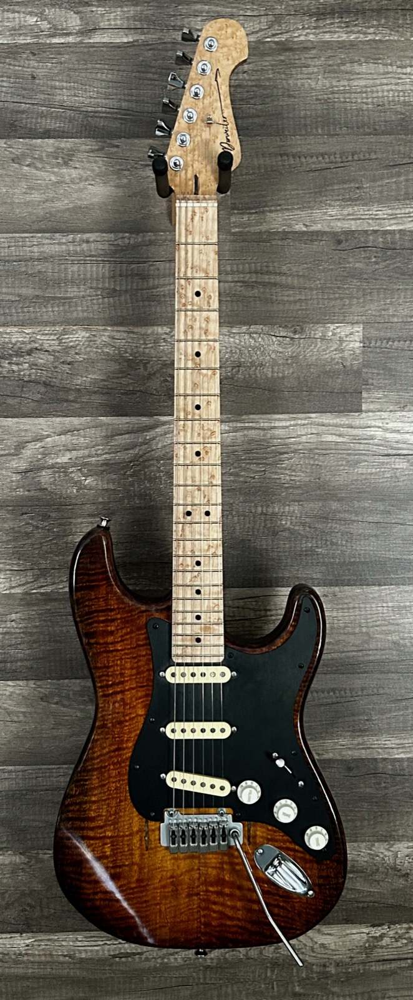
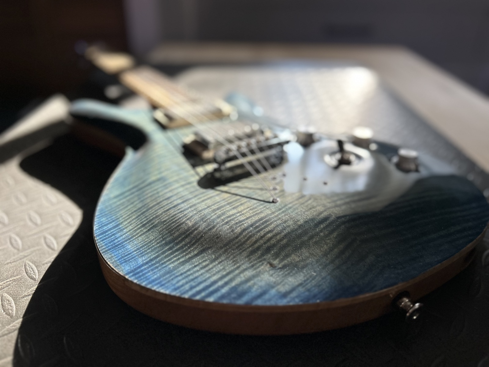

Quilted Maple P90
Quilted maple over black limba in a tobacco burst, with Wilkinson P90s under birdseye covers cut to match the fretboard and shop-made rosewood dot inlays.
Top
Quilted maple
Body
Black limba
Scale
25.5″
Finish
Nitro
Quilted maple over black limba in a tobacco burst, with Wilkinson P90s under birdseye covers cut to match the fretboard and shop-made rosewood dot inlays.

Flame poplar over black limba with a laminated walnut, mahogany and oak core — a modern multiscale that still feels traditional in the hand.

Stabilized burl set under a pigmented resin top over a walnut, wenge and maple back — figure that shifts as it catches the light.

A black limba body with malachite star inlays and a six-position switch that spans full humbucker and split-coil voicings.

Spalted and flamed maple over black limba, fanned frets, and a Fishman Tim Henson set — fast, modern and articulate.

Flame maple and ash under a classic tobacco burst, with a thirteen-piece laminate neck and a Lollar S-S-S set.

Flame maple over mahogany in a deep blue burst, ziricote board, and a P-90 and humbucker pairing for bite and warmth.

A walnut Tele-style build with a reverse headstock, nitro finish, and hand-wound Skywood pickups.

Figured walnut with an ebony board and a single-coil and humbucker pairing — understated, with the grain doing the talking.

Quilted maple split by a transparent blue resin river — a one-off centerpiece top.

AAA flame maple over mahogany with a deep red burst — the build that set the tone for everything since.